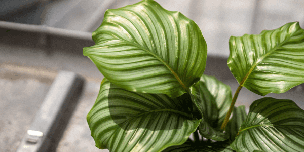
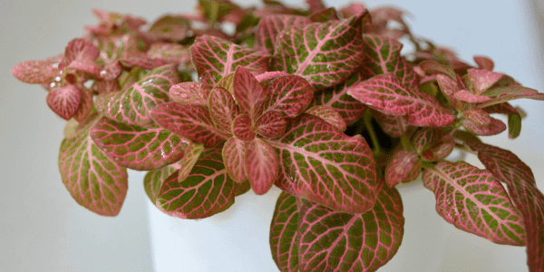
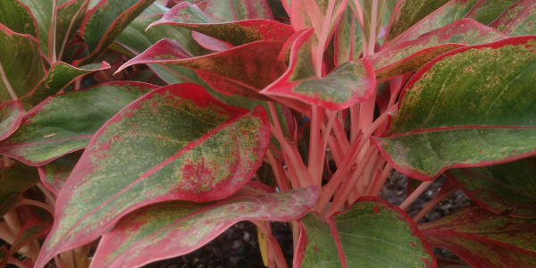
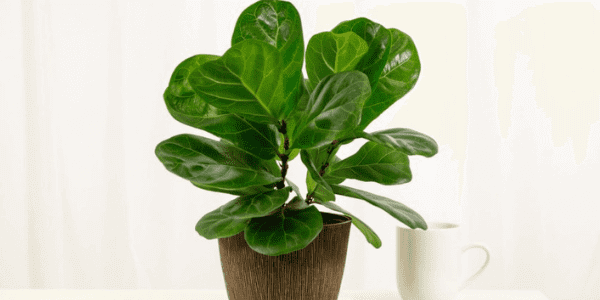
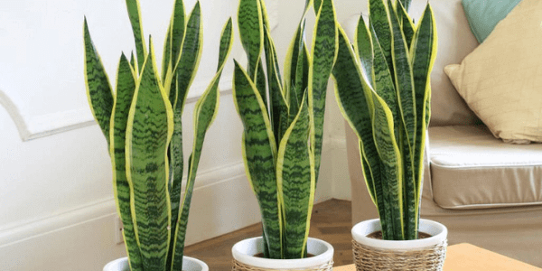
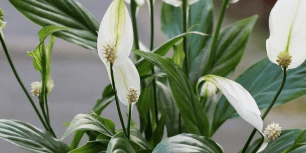
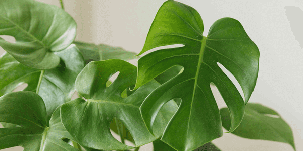
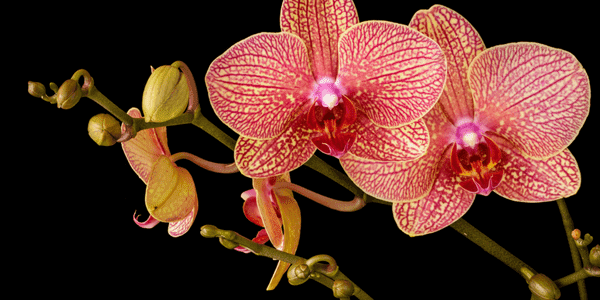
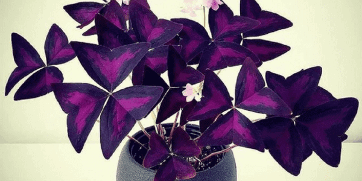
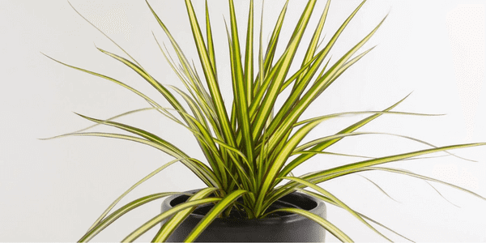

Esta es la planta que necesitas según tu signo
A la hora de elegir una planta tenemos en cuenta la exposición al sol, estética y mantenimiento. ¿Y si le sumamos algo más? Reflexionando sobre los rasgos de cada signo y teniendo en cuenta los atributos de cada planta algunos expertos llegaron a la siguiente conclusión...
Acuario (20 de enero al 18 de febrero): Calathea
Abiertos, curiosos, imaginativos y seductores... estas son las características que el horóscopo vincula a los acuario. Ser de acuario es sinonimo de originalidad y excentricidad, por esto, la planta que necesitan son las calatheas. Estas son muy llamativas y sus hojas parecen pintadas a mano. Son fáciles de cuidar, debido a que necesitan poco riego y luz moderada.
Piscis (19 de febrero al 20 de marzo): Fittonia
Signo artístico y sensible que puede perderse en sus sueños. Una planta de otro mundo, o con una propiedad ligeramente alucinógena, le atrae. Se le conoce como una “esponja psíquica” porque capta la energía de los demás. Recomiendan la quisquillosa Fittonia albivenis, o planta nerviosa, para apaciguar su naturaleza empática. No son muy exigentes por lo cual es ideal para los novatos en el mundo de la botánica.
Aries (21 de marzo al 19 de abril): Aglaonema Roja Siempre Verde China
Aries es impulsivo e intuitivo, y le gusta saltar a las cosas. Le agradan las cosas nuevas y de moda y, como signo de fuego, le atrae el color rojo. Algo como la Aglaonema roja siempre verde china, una variedad relativamente nueva con hojas rojas y rosadas brillantes, es perfecta para su disposición independiente.
Tauro (20 de abril al 20 de mayo): Higo Hoja de Violín
Tauro es uno de los signos más fértiles del zodíaco; cuando toca la tierra, algo crece. Necesita una planta que sea estable, confiable y hermosa, pero no ostentosa. A este signo le recomendamos la higuera hoja de violín, o Ficus lyrata, un árbol leñoso con grandes y distintivas hojas verdes.
Géminis (21 de mayo al 20 de junio): Sansevieria Trifasciata
La sansevieria trifasciata o lengua de tigre es una planta preciosa, con hojas de doble color. Es capaz de aguantar grandes cambios de temperatura y no necesita demasiada agua para vivir. Solo tienes que asegurarte que tiene suficiente luz. Por esto combina genial con la personalidad que el horóscopo atribuye a los géminis: personas con carácter muy versátil, con gran capacidad de adaptación, creativas y dispuestas a compartir lo que tienen.
Cáncer (21 de junio al 22 de julio): Lirio de la Paz
Las personas cáncer son hogareñas, con necesidad de cuidar a los demás, leales y sensuales, según el horóscopo. Además, son extrovertidas, pero retraídas. Es por esto que el espatifilio o lirio de la paz es la planta que necesitan. Esta planta puede hacer de cualquier habitación un rincón acogedor. Esto sí, tienes que regarla con frecuencia, y asegurarte que no tiene mucho sol directo.
Leo (23 de julio al 22 de agosto): Costilla de Adán
Leo es, según el horóscopo, el signo zodiacal dominante. Y es que dice que son personas valientes, independientes y muy seguras de sí mismas, a quienes les gusta ser el foco de atención. También les gusta ayudar, pero pueden ser arrogantes. Según Pozuelo, esto les hace la pareja perfecta para las costillas de Adán o monsteras. Esta planta tiene grandes hojas y una forma llamativa. Alcanza un gran tamaño, por lo que es igual de imponente que los Leo, pero también son independientes, por lo que no necesitan muchos cuidados, solo un riego moderado y mucha luz, evitando el sol directo.
Virgo (23 de agosto al 22 de septiembre): Orquídeas
A pesar de que los virgo son serios, metódicos y analíticos, también tienen un gran sentido de la amistad, encanto natural, delicadeza y son muy meticulosos. Es por esto que encajan tan bien con las orquídeas. Estas plantas son muy delicadas y necesitan un cuidado especial, ideal para las personas metódicas y delicadas. Necesitan temperaturas estables y un ambiente húmedo.
Libra (23 de septiembre al 22 de octubre): Cabeza de Flecha
Las personas de libra poseen un gran equilibrio, son amables, huyen del conflicto y viven buscando la armonía. Por esto, su mejor amigo del reino de las plantas será el Syngonium Red Heart o la planta Cabeza de Flecha. Estas son superelegantes y lucen colores verdes y rosáceos. Además, sus grandes hojas, en forma de flecha o corazón, te enamorarán. Esta planta necesita un lugar luminoso sin luz directa y necesita un riego moderado, y sobre todo, necesita un lugar cálido para vivir. Esto la hace ideal para interiores.

Escorpio (23 de octubre al 21 de noviembre):Trebol Púrpura
Escorpio es un signo sensible que se preocupa por el poder, la muerte y el renacimiento. Necesita algo exuberante y cíclico que parezca que ha muerto y sin embargo se recupere. Oxalis triangularis, comúnmente llamada “trébol púrpura”, es una planta divertida para su misterioso espíritu, ya que sus hojas se pliegan por la noche y se vuelven a abrir por la mañana.
Sagitario (22 de noviembre al 21 de diciembre): Crotón Petra
Como viajero y amante de los lugares extranjeros, Sagitario, necesita una planta de interior que no requiera muchos cuidados mientras está fuera explorando el mundo. Un crotón “Petra” rojo, o Codiaeum variegatum “Petra”, es una planta colorida, incluso llamativa, que le atraerá como un signo de fuego. Combínela con otros crotones en macetas atrevidas para un impresionante despliegue de color.

Capricornio (22 de diciembre al 19 de enero): Árbol Dragón
Como Capricornio es organizado y necesita una planta con estructura, una planta trepadora que crece por todas partes no le convendrá. Le gustan las plantas con estructura, así que le encantará la Dracaena marginata, o árbol dragón, una planta de interior con troncos leñosos cubiertos con hojas largas y delgadas rayadas.
